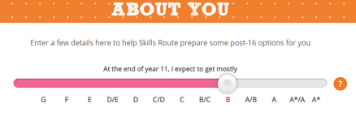
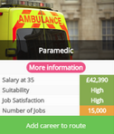
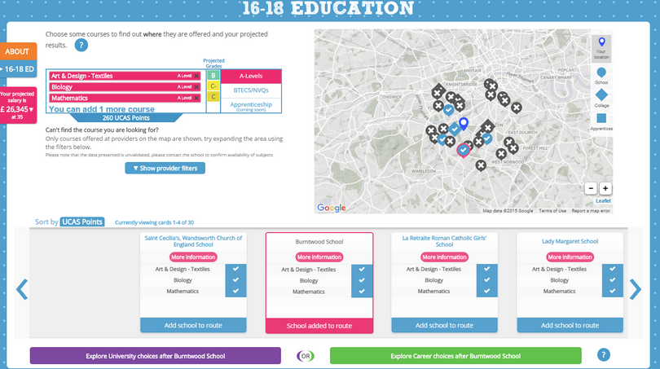

Abi oder Ausbildung?
Die richtige Wahl mit offenen Daten treffen
Skills Route (UK)
 Welche Schulabschlussfächer die richtigen sind und inwiefern diese Wahl die Chancen auf Uniplätze, Ausbildungsplätze
und das spätere Berufsleben beeinflusst, ist oft schwer einzuschätzen. In Großbritannien müssen Schülerinnen und
Schüler nach Abschluss des General Certificate of Secondary Education (GCSE), was in etwa dem deutschen
Realschlussabschluss entspricht, entscheiden, ob sie ins Berufsleben einsteigen oder weiter auf die
Hochschulzulassung hinarbeiten möchten und falls ja, mit welchen Fächern. Die Informationen über Schulangebote und
anschließende Ausbildungschancen sind jedoch oft nicht systematisch verfügbar und so hängt diese Entscheidung allzu
oft von Zufall und Bauchgefühl ab.
Welche Schulabschlussfächer die richtigen sind und inwiefern diese Wahl die Chancen auf Uniplätze, Ausbildungsplätze
und das spätere Berufsleben beeinflusst, ist oft schwer einzuschätzen. In Großbritannien müssen Schülerinnen und
Schüler nach Abschluss des General Certificate of Secondary Education (GCSE), was in etwa dem deutschen
Realschlussabschluss entspricht, entscheiden, ob sie ins Berufsleben einsteigen oder weiter auf die
Hochschulzulassung hinarbeiten möchten und falls ja, mit welchen Fächern. Die Informationen über Schulangebote und
anschließende Ausbildungschancen sind jedoch oft nicht systematisch verfügbar und so hängt diese Entscheidung allzu
oft von Zufall und Bauchgefühl ab.
Die Internetseite “Skills Route” hilft ihnen und ihren Eltern bei dieser Wahl. Die Seite bietet kostenlos weitreichende Informationen über in ihren Umkreis angebotene Bildungsangebote an. Dies beinhaltet auch eine Einschätzung, welche Berufswege und Unizulassungen mit den jeweiligen Fächern später zur Verfügung stehen und mit welchen Noten und welchem Gehalt sie in Verbindung mit entsprechenden Ausbildungswegen rechnen können.
 Skills Route verwendet offene Daten der britischen Regierung, unter anderem Daten, die vom Bildungsministerium (Department for Education, DfE) und vom Haringey Council bereit gestellt werden1. Dabei ist insbesondere der Datensatz “Level 3 value-added (L3VA) data” wichtig, der vom Bildungsministerium veröffentlicht wird und aufzeigt, wie viele Schülerinnen und Schüler den Sprung zwischen verschiedenen Klassen schaffen und die A-Level-Prüfungen ablegen. Der Datensatz zeigt nicht nur den Gesamtfortschritt der Schülerinnen und Schüler, sondern auch den Einfluss von Schulen und Lehrerinnen und Lehrern2.
Steckbrief
Skills Route wird durch die Firma MIME Consulting entwickelt und durchgeführt.
Skills Route gewann 2014 die Nesta/Open Data Institute Education Open Data Challenge.
Tony und Amanda sind beide 16 Jahre alt. Sie werden bald ihren GCSE-Abschluss erreichen und auf einmal stürzen viele Fragen und Optionen von allen Seiten auf sie ein. Ihre Großeltern fragen ständig, ob sie vorhaben, das Abitur (die britischen A-Levels) zu machen, Lehrer überhäufen sie mit Vorträgen über die Auswirkungen der Abschlussfächer auf ihre Unichancen und Tonys Vater fängt immer wieder damit an, dass es doch vielleicht auch gar nicht so verkehrt sei, direkt in den Beruf einzusteigen. Kurzum: Den beiden fällt angesichts der vielen unterschiedlichen und zum Teil ungeordneten Informationen die Orientierung schwer.
Zum Glück hat Amanda von einer Internetseite namens „Skills Route” gehört, mit der sie sich in Ruhe und umfassend selbst informieren können. Zunächst geben beide ihre Postleitzahl ein und beantworten ein paar Fragen dazu, welche Noten sie voraussichtlich bei ihrem GCSE-Abschluss erhalten werden. Anschließend wählen sie aus einer Liste Abschlussfächer aus, die sie interessieren würden. Damit können sie herausfinden, an welchen Schulen in der Umgebung diese Kurse angeboten werden. Zugleich zeigt ihnen Skills Route auch an, welches Notenniveau sie dort voraussichtlich erreichen werden.
 Am unteren Bildschirmrand steht eine Liste mit allen Schulen, die diese Fächer anbieten. Unter diesen können sie eine auswählen und sich im nächsten Schritt die mit dieser Schule verbundenen Universitäts- und Berufswege anzeigen lassen. Amanda und Tony spielen eine ganze Weile mit diesen Optionen, indem sie unterschiedliche Fächer auswählen, den Einzugsradius der möglichen Schulen erweitern und immer wieder andere Schulen anklicken. Dies gibt ihnen einen besseren Einblick in die Unterschiede zwischen Schulen und Fächerkombinationen. Zu möglichen Berufswegen werden ihnen jeweils Informationen angezeigt, ob dazu ein Studium notwendig ist oder nicht, wie zufriedenstellend dieser Beruf eingeschätzt wird, ob er zu ihnen passt, wie viele Menschen diesen Beruf aktuell ausüben und wie hoch das Gehalt im jeweiligen Beruf ist. Am Ende erhalten sie eine Zusammenfassung mit ihren gewählten Optionen.

Die zugrunde liegenden Daten beinhalten unter anderem die Schülerzahl an den jeweiligen Schulen, wie viele Schülerinnen und Schüler jeweils ein bestimmtes GCSE-Fach wählen und welche Noten an verschiedenen Schulen erreicht werden. Darüber enthalten die Daten Informationen darüber, an welche Universitäten Schülerinnen und Schüler verschiedener Schulen später gehen, bzw. wie viele in den Beruf einsteigen oder keinen Job oder weitere Ausbildung finden. Skills Route bietet jedoch nicht nur Informationen für Schüler und Eltern, sondern auch für Schulen. Diese können beispielsweise Analysen erhalten, welche Optionen sich ihre Schülerinnen und Schüler angesehen haben und diese weiter über die Auswirkungen von Noten und Fächern auf die weiteren Bildungs- und Berufswege informieren.

Tony und Amanda zeigen ihren Eltern wie die Seite funktioniert und sprechen mit ihnen gemeinsam verschiedene Option durch. Am Ende steht fest, dass Amanda sehr gerne auf das Abitur (die A-Levels) hinarbeiten will, Tony jedoch kann sich am besten vorstellen, direkt in die Praxis zu gehen und möchte eine Ausbildung beginnen. Für die nächste Woche hat daher Amanda einen Besichtigungstermin mit einer weiterführenden Schule vereinbart, die ihr von Skills Route empfohlen wurden. Und Tony hat mit Skills Route herausgefunden, dass er die Ausbildung eines Rettungssanitäters sehr spannend fände. Morgen wird ihm deshalb sein Nachbar, der seit vielen Jahren als Sanitäter tätig ist, einen Tag lang seine Arbeit zeigen.
Weiter lesen
Offizielle Seite:
https://www.rijksmuseum.nl/en/rijksstudio
Wettbewerb “Make Your Own Masterpiece”:
https://www.rijksmuseum.nl/en/rijksstudio-award
https://www.rijksmuseum.nl/en/rijksstudio-award-2014